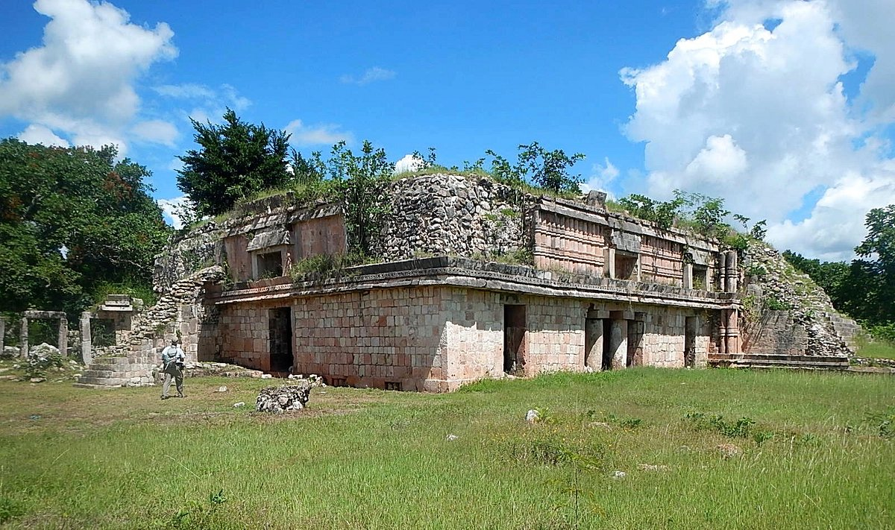

Chacmultún
Tekax, Yucatán
Chacmultún (maya: cerro de piedra roja) es un yacimiento arqueológico de la cultura maya situado en la localidad moderna de Chacmultun.
Se localiza a aproximadamente 120 km al sureste de Mérida, capital del estado de Yucatán, en México.
Chacmultún está situado en la región Puuc en el municipio de Tekax, siete kilómetros al suroeste de la cabecera Tekax.
El sitio arqueológico se encuentra en una altitud de 60 metros snmdm.
Costo por accesso: Si